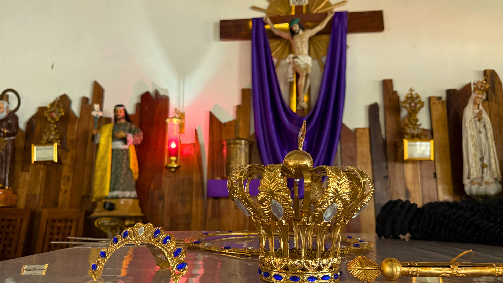

Historical Background
On May 13, 1917, three shepherd children Lucia dos Santos and her cousins Francisco and Jacinta Marto said they saw a beautiful lady dressed in white while tending sheep in Cova da Iria, near Fatima.
The lady later identified herself as the "Lady of the Rosary," but became widely known as Our Lady of Fatima.
The Apparitions
The Virgin Mary appeared six times between May 13 and October 13, 1917.
- Prayer, especially the Rosary
- Repentance and Conversion
- Peace in the world
The Miracle of the Sun
On October 13, 1917, around 70,000 people gathered and witnessed the sun appear to move or "dance" in the sky.
The Three Secrets
- A vision of hell
- A prophecy of World War II
- Persecution of the Church
Recognition
In 1930, the Catholic Church declared the apparitions worthy of belief.
Significance
- Devotion to the Rosary
- Penance and Faith
- Peace and Hope